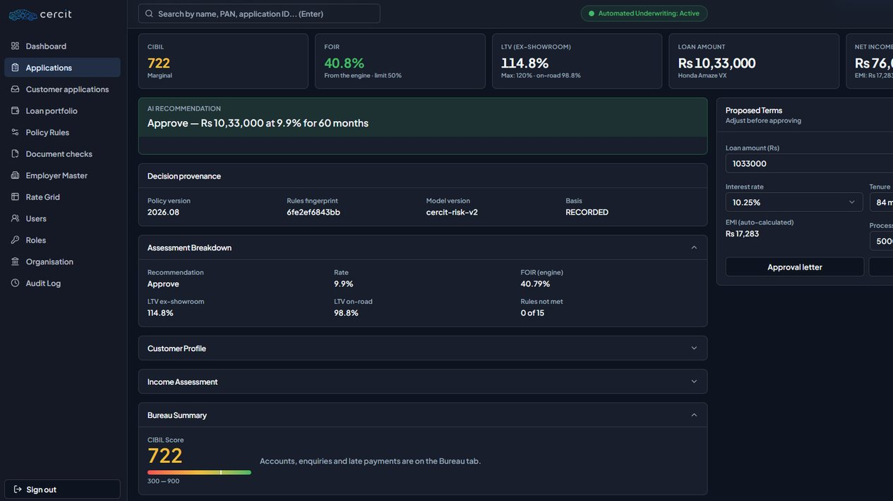

April 2024–present · Chennai
Deputy Manager, Auto National Retail Team
I work on enquiry lifecycles, Vahan market analysis and management dashboards. The work connects what happens in branches with the national retail business.
Vehicle finance · Product management · Chennai
Twelve years in vehicle finance.
Now building toward product management.
I'm a Deputy Manager at Sundaram Finance. I started at a branch counter in 2014 and now work in national auto retail analytics. The projects here are how I'm putting that experience into product work.
Studying Product Management with Applied AI through Masai and iHUB DivyaSampark, IIT Roorkee.
How I got here
 Originally from Dharwad. Now in Chennai.
Originally from Dharwad. Now in Chennai.My journey
At the branch, I worked on loan files and customer follow-up. In working capital finance, I helped roll out a lending product. Today, I use enquiry and market data to understand what's happening across the retail business.
Those roles made me interested in how the process itself is designed: what information someone needs, where a file gets stuck, and what would help them take the next step.
I'm learning product management alongside my job. cercit is one way I'm applying it: a loan-review demo where a credit officer can see the documents, policy checks and reasons behind a recommendation.
More about meSundaram Finance · Since 2014
April 2024–present · Chennai
I work on enquiry lifecycles, Vahan market analysis and management dashboards. The work connects what happens in branches with the national retail business.
April 2022–March 2024 · Bellary
I worked on lending-product rollout, including Bulk Diesel Finance, and coordinated with branches and channel partners.
August 2015–March 2022 · Bijapur
Branch accounts and loan operations put me close to the everyday work of documentation, repayments and customer follow-up. I became Branch Accountant in 2017.
August 2014–August 2015 · Shahpur
My first role covered loan processing, credit assessments and compliance work. This was where I learned how a loan file moves through a branch.
Selected work
A working lending demo, a payment-recovery concept and a banking interview prototype. Open a project to see the decisions behind it.


Credit review for salaried car loans
I turned my vehicle-finance experience into a working loan-review demo. It checks documents and lending rules, explains its recommendation and leaves the final decision with a credit officer.
Read the case studyRequest recovery from the payment receipt
After a wrong UPI payment, the sender needs a clear way to act. I designed a recovery request on the receipt, a return flow for the recipient and a status tracker for the sender.
Read the case studyInterview practice for bank and NBFC jobs
I designed a mock-interview concept for freshers and career switchers applying to banking roles. The work includes role-specific questions, a small survey, a clickable prototype and a pricing and launch plan.
Read the case study